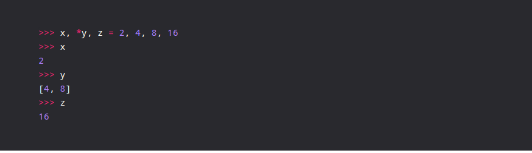

Index
Better Python
Various Ways to write shorter code in Python
====================================================================
Note: It's not good practise to make code shorter if you are sacrificing readability, maintainability and easy debugging with print statements in between.
1. pack repeatativecode into FUCTION
2. using LIST COMPREHENSION in Python
3. FUNCTIONAL PROGRAMMING approach in python ( functions like map, reduce, lambda)
Advanced Multiple Assignment

Merge Dictionaries
Reverse Iteration
Aggregate Elements using Zip()

Applying in zip for Transpose matrices
Sort sequences like tuples, dictionaries using labmda
a. sort tuples using labmda
b. sort dictionaries using lambda